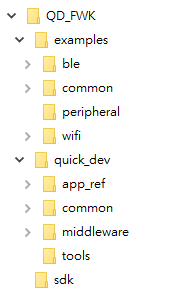
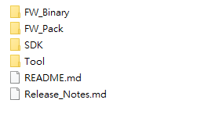
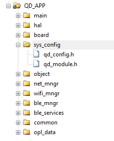
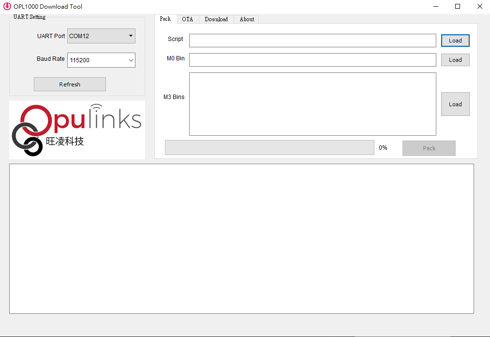

Get Started
Overview

-examples : example applications
-quick_dev : Quick-Dev framework program
-sdk : Opulinks chip SDK
Step 1. SDK download and install
Download SDK you needed in Opulinks Github
- OPL1000_A3: https://github.com/Opulinks-Tech/OPL1000A3-SDK
- OPL2500_A0:
After downloaded, the folder struct of SDK will look like below screenshot.

Copy below folder into QD_FWK\sdk\
- FW_Pack
- SDK
- Tool
Step 2. Start your first application
Now the sdk prepared and ready to go, open the qd_app project in :
QD_FWK\examples\start_up\qd_app
then into the folder base on the sdk version you just inserted.
For example:
- If download the OPL1000_A3 sdk, then open
opl1000_a3folder in qd_app project. - If download the OPL2500_A0 sdk, then open
opl2500_a0folder in qd_app project. - Other sdk version likewise.
Open qd_app_m3.uvprojx to start Keil application.
Step 3. Connect ot Dev-Kit
Connect the Dev-Kit via micro-USB
Step 4. Configuration setup
According to Introduction mention, QD_FWK provide system configure file and module configure option file.
To know the detail of the configure file, please check Project Configuration
And both file qd_config.h & qd_module.h can be checked in qd_app project.

Step 5. Build project
Click Build and Rebuild button to compiler project.
Output file qd_app_m3.bin located at <project root>\Output\Object\.
Step 6. Download firmware
Open download_RELEASE download tool located in sdk\Tools\Download\

-
In
Packtag insert Script, M0 Bin, M3 Bin files.- Script -> PatchData.txt (
sdk\FW_Pack\) - M0 Bin -> opl1000_m0.bin (
sdk\FW_Pack\) - M3 Bin -> qd_app_m3.bin (
<project root>\Output\Object)
Will generate
opl1000.bininsdk\Tool\Download\Patchafter clickPackbutton. - Script -> PatchData.txt (
-
In
OTAtag insert OTA loader, OPL1000 Bin files.- OTA loader -> opl1000_ota_loader.bin (
sdk\FW_Pack\) - OPL1000 Bin -> opl1000.bin (
sdk\Tool\Download\Patch\) - Product ID -> select to the target chip series ID.
- Chip ID -> select to the target chip ID.
- Firmware ID -> number of current project version.
- Checksum -> auto-calculated.
Will generate
opl1000_ota.bininsdk\Tool\Download\Patchafter clickBuild OTA Imagebutton. - OTA loader -> opl1000_ota_loader.bin (
-
Select
UART Portin UART Setting block which connected to Dev-Kit -
In
Downloadtag insert Patch Bin file to download.- Patch Bin -> opl1000_ota.bin (
sdk\Tool\Download\Patch)
- Patch Bin -> opl1000_ota.bin (
-
Click download and press reset button on Dev-Kit.
Step 7. Get log
Open terminal (such as Tera-Term or Putty application) and connect to the target COM port and press reset button on Dev-Kit.
API support
To check supported API provied from QD_FWK, locate to \app_ref\mngr_api\ check the header files.
- Network manager -
\app_ref\mngr_api\net_mngr_api\net_mngr_api.h - WI-FI manager -
\app_ref\mngr_api\wifi_mngr_api\wifi_mngr_api.h - BLE manager -
\app_ref\mngr_api\ble_mngr_api\ble_mngr_api.h